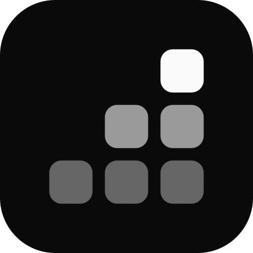
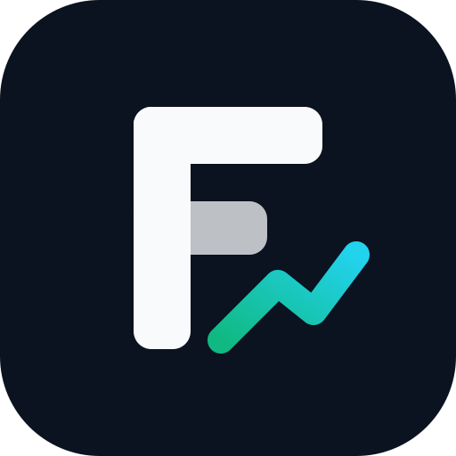
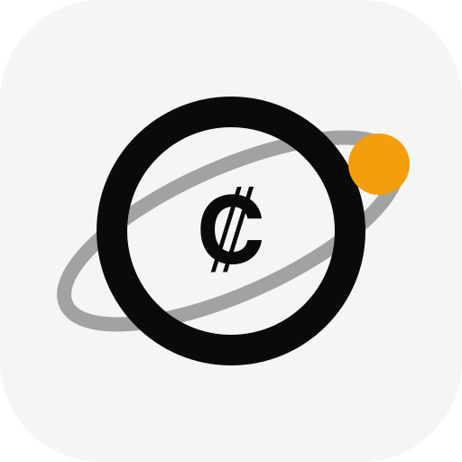
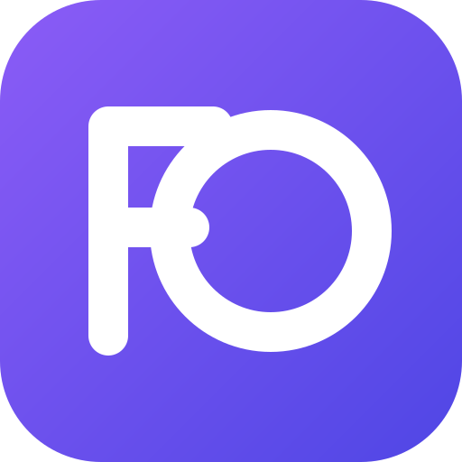
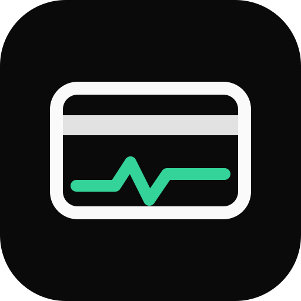

Finance OS · propuestas de logo
Cinco propuestas (2.5.0). Elegida: 1 · Bloques. Guía oficial en docs/marca/README.md.





Cinco propuestas (2.5.0). Elegida: 1 · Bloques. Guía oficial en docs/marca/README.md.




